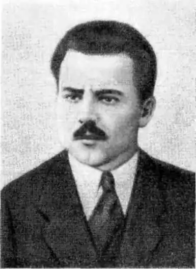
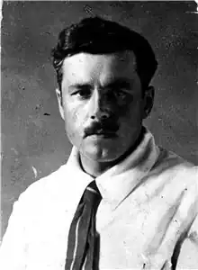

Справжнє прізвище Олекса Снісар. Народився 28.03.1891 р. на хуторі Конівцов Вовчанського повіту на Харківщині. У 1912 р., після того, як закінчив Харківську хліборобську школу з дипломом агронома, його мобілізували до війська. На фронті заслужив офіцерське звання. Всього служба в армії зайняла шість років, протягом яких О. Слісаренко майже нічого не писав.
Після війни працював агрономом, але незабаром повністю присвятився літературі. Публікуватися почав ще до революції, з 1910 р. в нелегальному студентському журналі "До праці" та в часописах "Рілля", "Плуг", "ЛНВ", "Рідний Край", "Сніп", "Село", "Дніпрові хвилі", "Маяк", "Промінь".
Видав збірки поезій "На березі Кастальському" (1919), "Поеми" (1923), "Байда" (1928), книжки оповідань "У болотах", "Плантації", "Сотні тисяч сил", "Камінний виноград", "Сліди бурунів", "Спроба на огонь", повісті "Бунт" та "Страйк", романи "Зламаний гвинт", "Чорний Ангел", "Хлібна ріка". У 1931–1933 рр. вийшло зібрання творів О. Слісаренка в 6 томах. Арештували письменника 29.04.1934 р. Майже рік тривали виснажливі допити. Спочатку письменника змусили зізнатися в приналежності до контрреволюційної організації, але через два місяці О. Слісаренко відмовився від цих зізнань, заявивши, що давав їх під фізичним впливом слідчого. Але тоді його звинуватили в приналежності до націоналістичної літературної організації ВАПЛІТЕ. Не допомогло те, що на процесі СВУ О. Слісаренко був громадським обвинувачем і сипав громами на націоналістів, критикував М. Хвильового. На суді 19.03.1935 р. О. Слісаренко ще раз відмовився від своїх зізнань, однак його позбавили волі на 10 років, а 9.10.1937 р. засудили до розстрілу. Вирок виконали 3.11.1937 року. Твори О. Слісаренка видавалися по війні неодноразово, але його символістські вірші залишалися маловідомими. Фантастичне оповідання "Князь Барціла", що було опубліковане в журналі "Червоний Шлях" (1926, № 4), не було вміщене у жодне з сучасних видань.